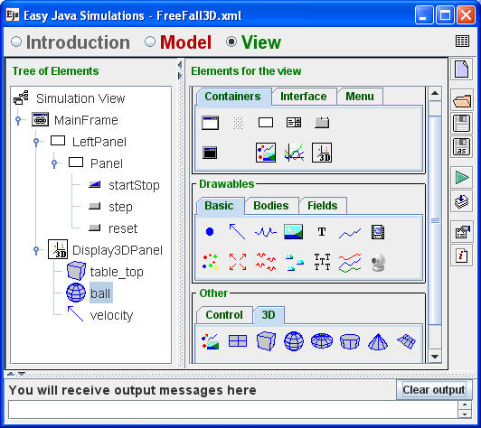
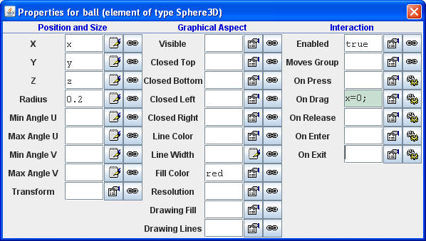

View elements are used to create the model's user interface.
Selecting View in the Ejs workspace displays the structure of the simulation's user interface as shown above. Although a small number of user interface elements, such as buttons, are important for controlling the temporal evolution of the model, the view also reveals relationships between the model and the geometric representation of the model. For example, the ball in the Free Fall simulation is represented using a red sphere. Right-clicking on the ball in the Tree of Elements and selecting the properties menu item display a table of properties.

Table of properties for the ball (Sphere 3D) in the Free Fall 3D model.
The ball (Sphere 3D) properties table establishes relationships between a ball's internal properties and the model. For example, the table binds the ball's x, y, and z position properties to the model's x, y, and z variables. Constants, such as 0.2 for the radius and red for the color, can also be used to set properties. If the element's interaction is enabled, the element can execute Java code in response to mouse actions. In this example, the x and y values are set to zero within the On Drag action so that this mouse action only affects the z coordinate of the ball. The complete On Drag code fragment can be seen by clicking on the editor icon next to the property name.